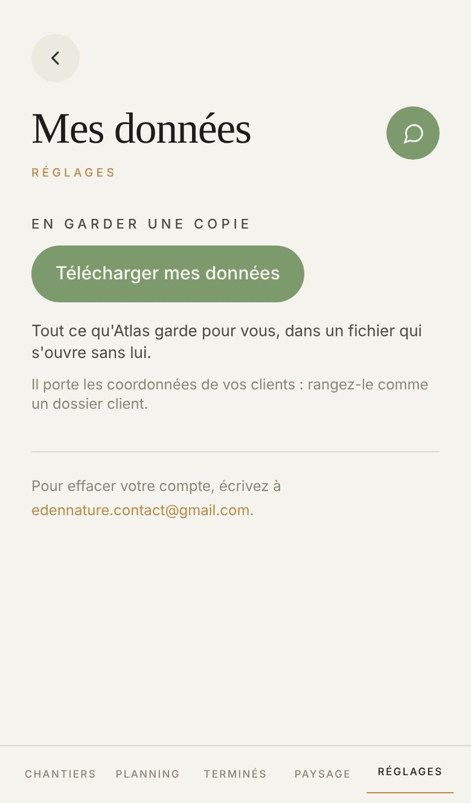

Proposé
Aujourd'hui

Ce qui change
- Le bouton garde les bouts ronds de l'appli, comme tous les boutons des Réglages (sa demande du 26 octobre).
- Télécharger mes données descend sous le pouce, au-dessus de la barre : la place du bouton plein sur chaque écran.
- Le fichier se montre avant de partir : le nom sous lequel il arrive sur votre téléphone (le nom de l'entreprise et la date), et ce qu'il contient, en une phrase.
- « Rangez-le comme un dossier client » passe sur une plage ambre : c'est la seule chose à faire une fois le fichier reçu.
- Les phrases montent de 12 et 13 px à 15 px. L'adresse pour effacer le compte se lit sans plisser les yeux, soulignée d'or.
- Plus de libellé doré sous le titre, plus de capitales espacées.
Ce qui ne bouge pas
- Un seul geste. Le mot de passe se redemande avant le fichier, avec les mêmes mots, sauf si vous venez de le donner : touchez Télécharger.
- L'effacement du compte ne se fait pas depuis l'appli : on écrit à l'adresse, comme aujourd'hui.
- Le fichier s'ouvre sans Atlas et porte le même nom qu'aujourd'hui.
- Un salarié qui tape l'adresse ne voit rien du fichier : la page dit à qui elle appartient. Touchez « Un salarié ».
À trancher
- Dans la vérification, « vérifiez que c'est bien vous » se lit deux fois, le titre puis la phrase dessous. Garder seulement « Ce fichier contient toute votre entreprise. » sous le titre ? La même feuille sert aux trois autres gestes protégés (coordonnées bancaires, ajouter ou retirer un appareil).